scDiagnostics: diagnostic functions to assess the quality of cell type annotations in single-cell RNA-seq data
Anthony Christidis
Core for Computational Biomedicine, Harvard Medical Schoolanthony-alexander_christidis@hms.harvard.edu
Andrew Ghazi
Core for Computational Biomedicine, Harvard Medical SchoolSmriti Chawla
Core for Computational Biomedicine, Harvard Medical SchoolNitesh Turaga
Core for Computational Biomedicine, Harvard Medical SchoolLudwig Geistlinger
Core for Computational Biomedicine, Harvard Medical SchoolRobert Gentleman
Core for Computational Biomedicine, Harvard Medical SchoolSource:
vignettes/scDiagnostics.Rmd
scDiagnostics.RmdPurpose
Annotation transfer from a reference dataset for the cell type annotation of a new query single-cell RNA-sequencing (scRNA-seq) experiment is an integral component of the typical analysis workflow. The approach provides a fast, automated, and reproducible alternative to the manual annotation of cell clusters based on marker gene expression. However, dataset imbalance and undiagnosed incompatibilities between query and reference dataset can lead to erroneous annotation and distort downstream applications.
The scDiagnostics package provides functionality for the
systematic evaluation of cell type assignments in scRNA-seq data.
scDiagnostics offers a suite of diagnostic functions to
assess whether both (query and reference) datasets are aligned, ensuring
that annotations can be transferred reliably. scDiagnostics
also provides functionality to assess annotation ambiguity, cluster
heterogeneity, and marker gene alignment. The implemented functionality
helps researchers to determine how accurately cells from a new scRNA-seq
experiment can be assigned to known cell types.
Installation
To install the development version of the package from Github, use the following command:
devtools::install_github("ccb-hms/scDiagnostics")NOTE: you will need the remotes package to install from GitHub.
To build the package vignettes upon installation use:
devtools::install_github("ccb-hms/scDiagnostics",
build_vignettes = TRUE,
dependencies = TRUE)Usage
To explore the capabilities of the scDiagnostics package, you can load your own data or utilize publicly available datasets obtained from the scRNAseq R package. In this guide, we will demonstrate how to use scDiagnostics with such datasets, which serve as valuable resources for exploring the package and assessing the appropriateness of cell type assignments.
library(scDiagnostics)
library(scRNAseq)
library(scater)
library(scran)
library(scuttle)
library(SingleR)
library(AUCell)
library(celldex)Scatter Plot: QC stats vs. Annotation Scores
Here, we will consider the Human Primary Cell Atlas (Mabbott et al. 2013) as a reference dataset and our query dataset consists of Haematopoietic stem and progenitor cells from (Bunis DG et al. 2021).
In scRNA-seq studies, assessing the quality of cells is important for accurate downstream analyses. At the same time, assigning accurate cell type labels based on gene expression profiles is an integral aspect of scRNA-seq data interpretation. Generally, these two are performed independently of each other. The rationale behind this function is to inspect whether certain QC (Quality Control) criteria impact the confidence level of cell type annotations.
For instance, it is reasonable to hypothesize that higher library sizes could contribute to increased annotation confidence due to enhanced statistical power for identifying cell type-specific gene expression patterns, as evident in the scatter plot below.
# load reference dataset
ref_data <- fetchReference("hpca", "2024-02-26")
# Load query dataset (Bunis haematopoietic stem and progenitor cell
# data) from Bunis DG et al. (2021). Single-Cell Mapping of
# Progressive Fetal-to-Adult Transition in Human Naive T Cells Cell
# Rep. 34(1): 108573
query_data <- BunisHSPCData()
rownames(query_data) <- rowData(query_data)$Symbol
# Add QC metrics to query data
query_data <- addPerCellQCMetrics(query_data)
# Log transform query dataset
query_data <- logNormCounts(query_data)
# Run SingleR to predict cell types
pred <- SingleR(query_data, ref_data, labels = ref_data$label.main)
# Assign predicted labels to query data
colData(query_data)$pred.labels <- pred$labels
# Get annotation scores
scores <- apply(pred$scores, 1, max)
# Assign scores to query data
colData(query_data)$cell_scores <- scores
# Create a scatter plot between library size and annotation scores
p1 <- plotQCvsAnnotation(query_data = query_data,
qc_col = "total",
label_col = "pred.labels",
score_col = "cell_scores",
label = NULL)
p1 + xlab("Library Size")However, certain QC metrics, such as the proportion of mitochondrial genes, may require careful consideration as they can sometimes be associated with cellular states or functions rather than noise. The interpretation of mitochondrial content should be context-specific and informed by biological knowledge.
In next analysis, we investigated the relationship between mitochondrial percentage and cell type annotation scores using liver tissue data from He S et al. 2020. Notably, we observed high annotation scores for macrophages and monocytes. These findings align with the established biological characteristic of high mitochondrial activity in macrophages and monocytes, adding biological context to our results.
# load query dataset
query_data <- HeOrganAtlasData(tissue = c("Liver"), ensembl = FALSE, location = TRUE)
# Add QC metrics to query data
mito_genes <- rownames(query_data)[grep("^MT-", rownames(query_data))]
query_data <- unfiltered <- addPerCellQC(query_data,subsets = list(mt = mito_genes))
qc <- quickPerCellQC(colData(query_data), sub.fields = "subsets_mt_percent")
query_data <- query_data[,!qc$discard]
# Log transform query dataset
query_data <- logNormCounts(query_data)
# Run SingleR to predict cell types
pred <- SingleR(query_data, ref_data, labels = ref_data$label.main)
# Assign predicted labels to query data
colData(query_data)$pred.labels <- pred$labels
# Get annotation scores
scores <- apply(pred$scores, 1, max)
# Assign scores to query data
colData(query_data)$cell_scores <- scores
# Create a new column for the labels so it is easy to distinguish
# between Macrophoges, Monocytes and other cells
query_data$label_category <-
ifelse(query_data$pred.labels %in% c("Macrophage", "Monocyte"),
query_data$pred.labels,
"Other Cells")
# Define custom colors for cell type labels
cols <- c("Other Cells" = "grey", "Macrophage" = "green", "Monocyte" = "red")
# Generate scatter plot for all cell types
p2 <- plotQCvsAnnotation(query_data = query_data,
qc_col = "subsets_mt_percent",
label_col = "label_category",
score_col = "cell_scores",
label = NULL)
p2 + scale_color_manual(values = cols) +
xlab("Subsets Mitochondrial Percentage (%)")Examining Distribution of QC stats and Annotation Scores
In addition to the scatter plot, we can gain further insights into the gene expression profiles by visualizing the distribution of user defined QC stats and annotation scores for all the cell types or specific cell types. This allows us to examine the variation and patterns in expression levels and scores across cells assigned to the cell type of interest.
To accomplish this, we create two separate histograms. The first histogram displays the distribution of the annotation scores.
The second histogram visualizes the distribution of QC stats. This provides insights into the overall gene expression levels for the specific cell type. Here in this particular example we are investigating percentage of mitochondrial genes.
By examining the histograms, we can observe the range, shape, and potential outliers in the distribution of both annotation scores and QC stats. This allows us to assess the appropriateness of the cell type assignments and identify any potential discrepancies or patterns in the gene expression profiles for the specific cell type.
# Generate histogram
histQCvsAnnotation(query_data = query_data, qc_col = "subsets_mt_percent",
label_col = "pred.labels",
score_col = "cell_scores",
label = NULL)The right-skewed distribution for mitochondrial percentages and a left-skewed distribution for annotation scores in above histograms suggest that most cells have lower mitochondrial contamination and higher confidence in their assigned cell types.
Exploring Gene Expression Distribution
This function helps user to explore the distribution of gene expression values for a specific gene of interest across all the cells in both reference and query datasets and within specific cell types. This helps to evaluate whether the distributions are similar or aligned between the datasets. Discrepancies in distribution patterns may indicate potential incompatibilities or differences between the datasets.
The function also allows users to narrow down their analysis to specific cell types of interest. This enables investigation of whether alignment between the query and reference datasets is consistent not only at a global level but also within specific cell types.
# Load data
sce <- HeOrganAtlasData(tissue = c("Marrow"), ensembl = FALSE)
# Divide the data into reference and query datasets
set.seed(100)
indices <- sample(ncol(assay(sce)), size = floor(0.7 * ncol(assay(sce))), replace = FALSE)
ref_data <- sce[, indices]
query_data <- sce[, -indices]
# Log-transform datasets
ref_data <- logNormCounts(ref_data)
query_data <- logNormCounts(query_data)
# Get cell type scores using SingleR
pred <- SingleR(query_data, ref_data, labels = ref_data$reclustered.broad)
# Assign labels to query data
colData(query_data)$labels <- pred$labels
# Generate density plots
plotMarkerExpression(reference_data = ref_data,
query_data = query_data,
ref_cell_type_col = "reclustered.broad",
query_cell_type_col = "labels",
gene_name = "MS4A1",
cell_type = "B_and_plasma")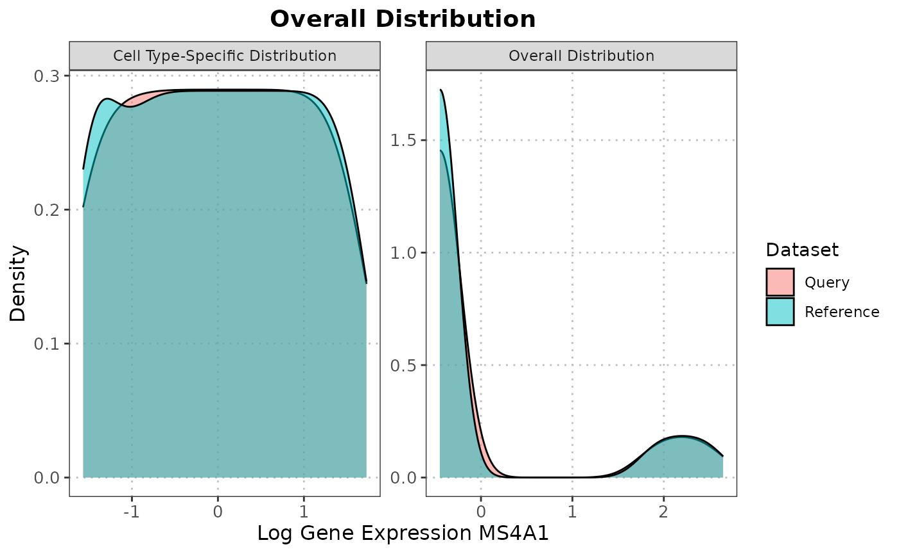
In the provided example, we examined the distribution of expression values for the gene MS4A1, a marker for naive B cells, in both the query and reference datasets. Additionally, we also looked at the distribution of MS4A1 expression in the B_and_plasma cell type. We observed overlapping distributions in both cases, suggesting alignment between the reference and query datasets.
Visualize Gene Expression on Dimensional Reduction Plot
To gain insights into the gene expression patterns and their representation in a dimensional reduction space, we can utilize the plotGeneExpressionDimred function. This function allows us to plot the gene expression values of a specific gene on a dimensional reduction plot generated using methods like t-SNE, UMAP, or PCA. Each single cell is color-coded based on its expression level of the gene of interest.
In the provided example, we are visualizing the gene expression values of the gene “VPREB3” on a PCA plot. The PCA plot represents the cells in a lower-dimensional space, where the x-axis corresponds to the first principal component (Dimension 1) and the y-axis corresponds to the second principal component (Dimension 2). Each cell is represented as a point on the plot, and its color reflects the expression level of the gene “VPREB3,” ranging from low (lighter color) to high (darker color).
# Run PCA on the query data
query_data <- runPCA(query_data)
# Generate dimension reduction plot color code by gene expression
# plotGeneExpressionDimred(se_object = query_data,
# method = "PCA",
# pc_subset = 1:5,
# feature = "VPREB3")The dimensional reduction plot allows us to observe how the gene expression of VPREB3 is distributed across the cells and whether any clusters or patterns emerge in the data.
Visualize Gene Sets or Pathway Scores on Dimensional Reduction Plot
In addition to examining individual gene expression patterns, it is often useful to assess the collective activity of gene sets or pathways within single cells. This can provide insights into the functional states or biological processes associated with specific cell types or conditions. To facilitate this analysis, the scDiagnostics package includes a function called plotGeneSetScores that enables the visualization of gene set or pathway scores on a dimensional reduction plot.
The plotGeneSetScores function allows you to plot gene set or pathway scores on a dimensional reduction plot generated using methods such as PCA, t-SNE, or UMAP. Each single cell is color-coded based on its scores for specific gene sets or pathways. This visualization helps identify the heterogeneity and patterns of gene set or pathway activity within the dataset, potentially revealing subpopulations with distinct functional characteristics.
# Compute scores using AUCell
expression_matrix <- assay(query_data, "logcounts")
cells_rankings <- AUCell_buildRankings(expression_matrix, plotStats = FALSE)
# Generate gene sets
gene_set1 <- sample(rownames(expression_matrix), 10)
gene_set2 <- sample(rownames(expression_matrix), 20)
gene_sets <- list(geneSet1 = gene_set1,
geneSet2 = gene_set2)
# Calculate AUC scores for gene sets
cells_AUC <- AUCell_calcAUC(gene_sets, cells_rankings)
# Assign scores to colData
colData(query_data)$geneSetScores <- assay(cells_AUC)["geneSet1", ]
# Plot gene set scores on PCA
plotGeneSetScores(se_object = query_data,
method = "PCA",
score_col = "geneSetScores",
pc_subset = c(1:6))In the provided example, we demonstrate the usage of the plotGeneSetScores function using the AUCell package to compute gene set or pathway scores. Custom gene sets are generated for demonstration purposes, but users can provide their own gene set scores using any method of their choice. It is important to ensure that the scores are assigned to the colData of the reference or query object and specify the correct feature name for visualization.
By visualizing gene set or pathway scores on a dimensional reduction plot, you can gain a comprehensive understanding of the functional landscape within your single-cell gene expression dataset and explore the relationships between gene set activities and cellular phenotypes.
Evaluating Alignment Between Reference and Query Datasets in Terms of Highly Variable Genes
We are assessing the similarity or alignment between two datasets, the reference dataset, and the query dataset, in terms of highly variable genes (HVGs). We calculate the overlap coefficient between the sets of highly variable genes in the reference and query datasets. The overlap coefficient quantifies the degree of overlap or similarity between these two sets of genes. A value closer to 1 indicates a higher degree of overlap, while a value closer to 0 suggests less overlap. The computed overlap coefficient is printed, providing a numerical measure of how well the highly variable genes in the reference and query datasets align. In this case, the overlap coefficient is 0.63, indicating a moderate level of overlap.
# Get top HVG genes on each dataset
ref_var <- getTopHVGs(ref_data, n = 2000)
query_var <- getTopHVGs(query_data, n = 2000)
# Compute the overlap coefficient
overlap_coefficient <- calculateHVGOverlap(reference_genes = ref_var,
query_genes = query_var)
overlap_coefficient
#> [1] 0.63Compare Gene Importance Across Datasets Using Random Forest
The calculateVarImpOverlap function in this package is designed to identify and compare the most important genes for differentiating cell types between a query dataset and a reference dataset using the Random Forest algorithm. This comparison helps in understanding the overlap and consistency of key gene markers across different datasets.
This function applies the Random Forest algorithm to compute the importance of genes in differentiating between cell types within both a reference dataset and a query dataset. It then compares the top genes identified in both datasets to assess the overlap in their importance scores. This can be particularly useful for researchers aiming to validate their findings across different single-cell RNA-seq datasets, ensuring the robustness of identified markers and improving the reliability of subsequent analyses and annotations.
# Intersect the gene symbols to obtain common genes
common_genes <- intersect(ref_var, query_var)
# Select desired cell types
selected_cell_types <- c("CD4", "CD8", "B_and_plasma")
ref_data_subset <- ref_data[common_genes, ref_data$reclustered.broad %in% selected_cell_types]
query_data_subset <- query_data[common_genes, query_data$labels %in% selected_cell_types]
# Compute important variables for all pairwise cell comparisons
var_imp_overlap <- calculateVarImpOverlap(ref_data_subset,
query_data_subset,
ref_cell_type_col = "reclustered.broad",
query_cell_type_col = "labels",
n_top = 50)
# Comparison table
var_imp_overlap$var_imp_comparison
#> B_and_plasma-CD8 B_and_plasma-CD4 CD8-CD4
#> 0.74 0.84 0.72The resulting overlap in the top genes’ importance scores for differentiating CD4+ T cells from CD8+ T cells between the reference and query datasets is 0.72. This implies that only 72% of the top 50 genes identified as important in distinguishing these two cell types in the reference dataset are also identified as important in the query dataset.
This moderate overlap indicates some level of consistency in the gene markers identified across the datasets, but it also highlights potential differences in the biological or technical conditions between the datasets. Factors such as batch effects, differences in cell preparation, or inherent biological variability could contribute to these differences. Consequently, while some key markers for CD4+ and CD8+ T cells are reliably detected in both datasets, additional validation and possibly further investigation into the causes of variability are warranted to ensure robust and accurate cell type differentiation. This finding underscores the importance of cross-dataset comparisons to validate and refine marker genes in single-cell transcriptomic studies.
Visualizing Reference and Query Cell Types using Multidimensional Scaling (MDS)
This function performs Multidimensional Scaling (MDS) analysis on the query and reference datasets to examine their similarity. The dissimilarity matrix is calculated based on the correlation between the datasets, representing the distances between cells in terms of gene expression patterns. MDS is then applied to derive low-dimensional coordinates for each cell. Subsequently, a scatter plot is generated, where each data point represents a cell, and cell types are color-coded using custom colors provided by the user. This visualization enables the comparison of cell type distributions between the query and reference datasets in a reduced-dimensional space.
The rationale behind this function is to visually assess the alignment and relationships between cell types in the query and reference datasets.
# Generate the MDS scatter plot with cell type coloring
plotCellTypeMDS(query_data = query_data_subset,
reference_data = ref_data_subset,
query_cell_type_col = "labels",
ref_cell_type_col = "reclustered.broad")Upon examining the MDS scatter plot, we observe that the CD4 and CD8 cell types overlap to some extent.By observing the proximity or overlap of different cell types, one can gain insights into their potential relationships or shared characteristics.
The selection of custom genes and desired cell types depends on the user’s research interests and goals. It allows for flexibility in focusing on specific genes and examining particular cell types of interest in the visualization.
Visualizing Principal Components for Different Cell Types
The visualizeCellTypePCA function is designed to provide a clear visual representation of the principal components for different cell types in both query and reference datasets. This visualization helps in comparing the cell type distributions and identifying potential differences or similarities between datasets.
This function projects the query dataset onto the principal component space of the reference dataset. It then visualizes the specified principal components for the specified cell types using ggplot2 for creating plots. By default, the function considers the first ten principal components and allows the user to select specific components for detailed visualization. The function will project the query dataset onto the PCA space of the reference dataset and generate scatter plots for pairs of principal components (e.g., PC1 vs. PC2, PC1 vs. PC3, etc.).
When interpreting these plots, one might observe distinct clustering of cell types, indicating clear differentiation in the principal component space. For instance, if CD4+ and CD8+ T cells form separate clusters, it suggests that the PCA effectively captures the differences between these cell types. Conversely, if the clusters overlap significantly, it could imply that the chosen principal components do not fully capture the distinctions between these cell types.
# Run PCA on the reference data
ref_data_subset <- runPCA(ref_data_subset)
# Plot the PCs data
plotCellTypePCA(query_data = query_data_subset, reference_data = ref_data_subset,
query_cell_type_col = "reclustered.broad",
ref_cell_type_col = "reclustered.broad",
pc_subset = c(1:6))The B and plasma cell types from the reference and query datasets do not overlap well in the PCA space. This lack of overlap could indicate discrepancies between the datasets, such as poor classification by SingleR, differences in data quality, technical artifacts, or biological variations that were not accounted for.
Boxplot of Principal Components for Different Cell Types
The boxplotPCA function provides a detailed visualization of principal component analysis (PCA) results for different cell types across two datasets: query and reference. This function generates boxplots of principal components (PCs), allowing for comparative analysis of the distributions of the PCs across various cell types and datasets.
These boxplots allow us to observe the distribution of each principal component for each cell type across the reference and query datasets. If the boxplots for a given cell type overlap significantly between the reference and query datasets, it suggests that the PCA results are consistent across these datasets. This overlap indicates that the cell type characteristics are well captured and comparable between the datasets.
# Run PCA on the reference data
ref_data_subset <- runPCA(ref_data_subset)
# Boxplots of PCs
boxplotPCA(query_data = query_data_subset,
reference_data = ref_data_subset,
query_cell_type_col = "labels",
ref_cell_type_col = "reclustered.broad",
pc_subset = c(1:6))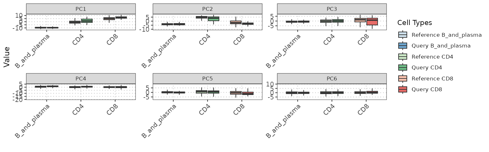
The boxplots for the different cell types from the reference and query datasets do not overlap well. This lack of overlap could indicate discrepancies between the datasets, such as differences poor classification by SingleR, differences in data quality, technical artifacts, or biological variations that were not accounted for. This outcome might prompt further investigation into the preprocessing steps or the inherent variability within these cell types, potentially leading to refinements in data normalization or correction for batch effects to achieve better alignment.
Hotelling’s Two-Sample T2 Test on Bulk PCA Scores
p_values <- calculateHotellingPValue(query_data = query_data_subset,
reference_data = ref_data_subset,
query_cell_type_col = "labels",
ref_cell_type_col = "reclustered.broad",
pc_subset = c(1:6))
round(p_values, 5)
#> B_and_plasma CD8 CD4
#> 0.006 0.000 0.000PC Regression Analysis
Performing PC regression analysis on a SingleCellExperiment object enables users to examine the relationship between a principal component (PC) from the dimension reduction slot and an independent variable of interest. By specifying the desired dependent variable as one of the principal components (e.g., “PC1”, “PC2”, etc.) and providing the corresponding independent variable from the colData slot (e.g. “cell_type”), users can explore the associations between linear structure in the single-cell gene expression dataset (reference and query) and an independent variable of interest (e.g. cell type or batch).
The function prints two diagnostic plots by default:
- a plot of the two PCs with the highest R2 with the specified independent variable
- a dot plot showing the R2 of each consecutive PC ~
indep.var regression
- Generally you should expect this plot to die off to near 0 before ~PC10
- Interpretation example: If the R2 values are high (>=50%) anywhere in PCs 1-5 and your independent variable is “batch”, you have batch effects!
# Plot the PC data (no query data)
regress_res <- regressPC(reference_data = ref_data_subset,
ref_cell_type_col = "reclustered.broad",
pc_subset = 1:25)
# Plot results
plot(regress_res, plot_type = "r_squared")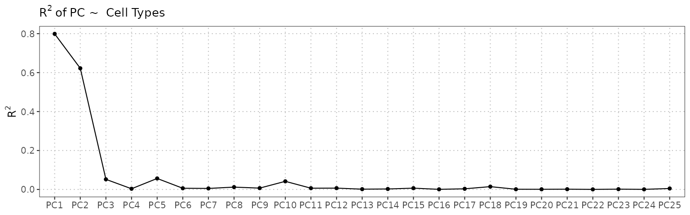
plot(regress_res, plot_type = "p-value")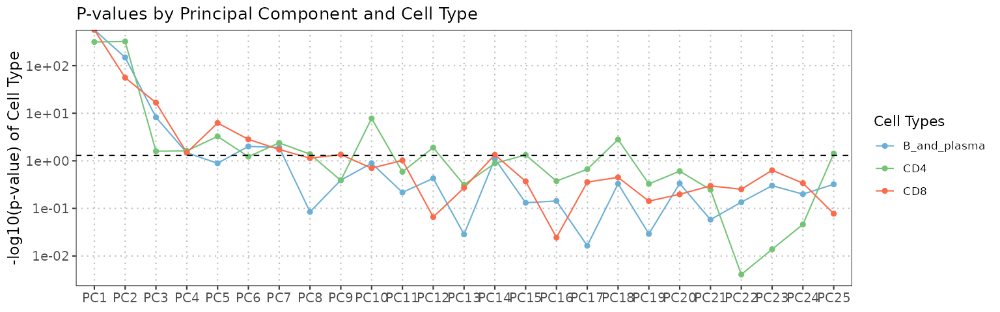
This analysis helps uncover whether there is a systematic variation in PC values across different cell types. In the example above, we can see that the four cell types are spread out across both PC1 and PC2. Digging into the genes with high loadings on these PCs can help explain the biological or technical factors driving cellular heterogeneity. It can help identify PC dimensions that capture variation specific to certain cell types or distinguish different cellular states.
Let’s look at the genes driving PC1 by ordering the rotation matrix by the absolute gene loadings for PC1:
pc_df <- attr(reducedDims(query_data)$PCA, "rotation")[, 1:5] |>
as.data.frame()
pc_df[order(abs(pc_df$PC1)), "PC1", drop = FALSE] |>
tail()
#> PC1
#> GZMA 0.1517186
#> GNLY 0.1552411
#> CST7 0.1665665
#> CCL4 0.1686632
#> CCL5 0.1815465
#> NKG7 0.2286197PC1 is mostly driven by NKG7 - Natural Killer Cell Granule Protein 7. This gene is important in CD8+ T cells, so that makes sense that it’s distinguishing the cell types shown.
Cell Type-specific Pairwise Correlation Analysis and Visualization
This analysis aims to explore the correlation patterns between different cell types in a single-cell gene expression dataset. The goal is to compare the gene expression profiles of cells from a reference dataset and a query dataset to understand the relationships and similarities between various cell types.
To perform the analysis, we start by computing the pairwise correlations between the query and reference cells for selected cell types (“CD4”, “CD8”, “B_and_plasma”). The Spearman correlation method is used, user can also use Pearsons correlation coefficient.
cor_matrix_avg <- calculateAveragePairwiseCorrelation(query_data = query_data_subset,
reference_data = ref_data_subset,
query_cell_type_col = "labels",
ref_cell_type_col = "reclustered.broad",
cell_types = selected_cell_types,
correlation_method = "spearman")
# Visualize the output
plot(cor_matrix_avg)
In this case, users have the flexibility to extract the gene expression profiles of specific cell types from the reference and query datasets and provide these profiles as input to the function. Additionally, they can select their own set of genes that they consider relevant for computing the pairwise correlations. For demonstration we have used common highly variable genes from reference and query dataset.
By providing their own gene expression profiles and choosing specific genes, users can focus the analysis on the cell types and genes of interest to their research question.
Pairwise Distance Analysis and Density Visualization
This function serves to conduct a analysis of pairwise distances or correlations between cells of specific cell types within a single-cell gene expression dataset. By calculating these distances or correlations, users can gain insights into the relationships and differences in gene expression profiles between different cell types. The function facilitates this analysis by generating density plots, allowing users to visualize the distribution of distances or correlations for various pairwise comparisons.
The analysis offers the flexibility to select a particular cell type for examination, and users can choose between different distance metrics, such as “euclidean” or “manhattan,” to calculate pairwise distances.
To illustrate, the function is applied to the cell type CD8 using the euclidean distance metric in the example below.
plotPairwiseDistancesDensity(query_data = query_data_subset,
reference_data = ref_data_subset,
query_cell_type_col = "labels",
ref_cell_type_col = "reclustered.broad",
cell_type_query = "CD4",
cell_type_ref = "CD4",
distance_metric = "euclidean")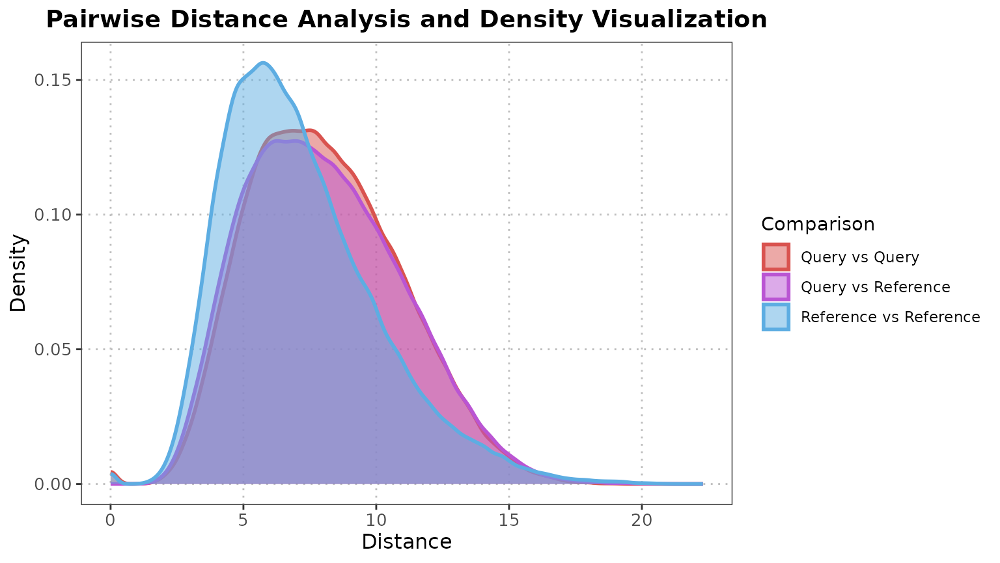
Alternatively, users can opt for the “correlation” distance metric, which measures the similarity in gene expression profiles between cells.
To illustrate, the function is applied to the cell type CD4 using the correlation distance metric in the example below. By selecting either the “pearson” or “spearman” correlation method, users can emphasize either linear or rank-based associations, respectively.
plotPairwiseDistancesDensity(query_data = query_data_subset,
reference_data = ref_data_subset,
query_cell_type_col = "labels",
ref_cell_type_col = "reclustered.broad",
cell_type_query = "CD4",
cell_type_ref = "CD4",
distance_metric = "correlation",
correlation_method = "spearman")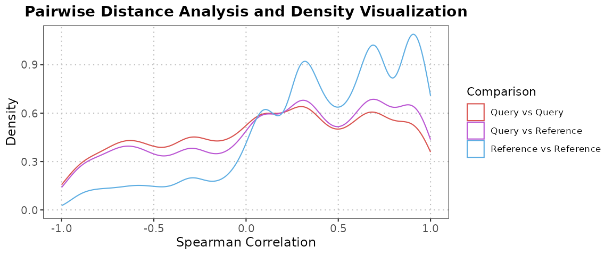
By utilizing this function, users can explore the pairwise distances between query and reference cells of a specific cell type and gain insights into the distribution of distances through density plots. This analysis aids in understanding the similarities and differences in gene expression profiles for the selected cell type within the query and reference datasets.
Calculate Nearest Neighbor Diagnostics for Cell Type Classification
The calculateNearestNeighborProbabilities function is designed to compute the probabilities that each cell in a query dataset belongs to either the reference or the query dataset for each cell type using nearest neighbor analysis. This function is particularly useful for evaluating the consistency of cell type classification across datasets.
This function projects the query data onto the PCA space of the reference data, balances the cell sizes between the reference and query datasets through data augmentation if necessary, and calculates the probability of each cell in the query dataset belonging to the query dataset for each cell type using a nearest neighbor search.
Ideally, the probability distributions for each cell type would center around 0.5, indicating an equal likelihood of belonging to either the reference or query dataset. This balanced probability suggests that the query and reference datasets are well-matched for that cell type. Deviations from this ideal, such as bimodal distributions, may indicate that the query dataset contains additional, unaccounted-for cell types or subpopulations within that particular cell type. Such patterns can highlight the need for further investigation into the composition and quality of the query dataset, possibly revealing the presence of unexpected or mislabeled cells.
nn_output <- calculateNearestNeighborProbabilities(query_data = query_data_subset,
reference_data = ref_data_subset,
query_cell_type_col = "labels",
ref_cell_type_col = "reclustered.broad")
# Plot output
plot(nn_output)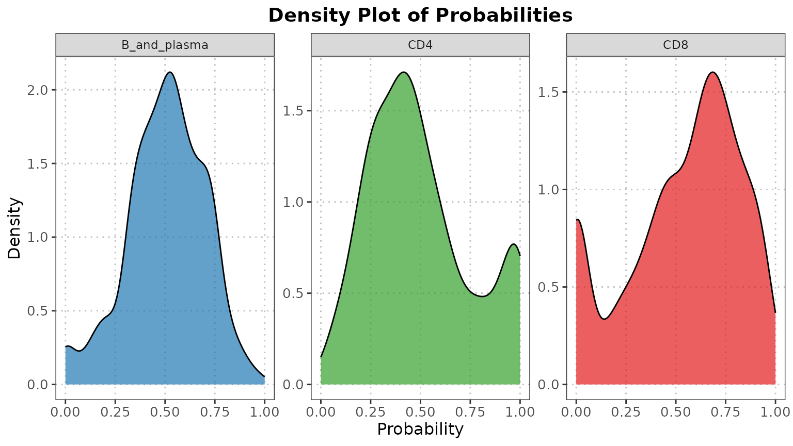
The nearest neighbor diagnostics for CD4+ T cells yield a bimodal probability distribution, this suggests that the query dataset contains distinct subpopulations or potentially mislabeled cells within the CD4+ T cell category. Ideally, the probability distribution should center around 0.5, indicating an equal likelihood of belonging to either the reference or query dataset. A bimodal distribution, however, indicates that some CD4+ T cells in the query dataset are very similar to those in the reference, while others are distinctly different.
Isolation Forest-based Anomaly Detection in PCA Space for Single-Cell Data
The detectAnomaly function is designed to identify anomalies in single-cell RNA sequencing (scRNA-seq) data by leveraging principal component analysis (PCA) and the isolation forest algorithm. The main purpose of this function is to project both reference and query datasets onto a common PCA space, build an isolation forest on the reference data, and use it to detect anomalies in the query data based on their PCA projections. If a query dataset is not provided, the function computes anomaly scores for the reference data itself. This process helps in distinguishing cells that deviate significantly from the expected patterns within a given cell type, thereby highlighting potential errors, rare cell types, or other interesting biological variations.
The function returns a comprehensive output, including anomaly scores for each cell, logical vectors indicating whether a cell is classified as an anomaly, and the PCA projections of both reference and query datasets. Additionally, it provides the proportion of variance explained by the retained principal components. To interpret the results, anomaly scores closer to the specified threshold (default 0.5) suggest cells that are considered borderline anomalies. Scores significantly above this threshold indicate strong anomalies. By examining these scores and their distributions, users can identify and investigate outlier cells, ensuring data quality and uncovering potential biological insights.
# Store PCA anomaly data
anomaly_output <- detectAnomaly(reference_data = ref_data_subset,
query_data = query_data_subset,
ref_cell_type_col = "reclustered.broad",
query_cell_type_col = "labels")
# Plot the anomaly output for a cell type
# plot(anomaly_output, cell_type = "CD4", pc_subset = 1:5, data_type = "query")The high frequency of anomalies within CD4+ T cells could suggest the presence of annotation errors or rare CD4+ T cells sub-populations. This capability allows researchers to not only assess the quality of their datasets but also uncover potential biological insights that might otherwise go unnoticed.
Compute Cell Distances Between Reference and Query Data
The calculateCellDistances function is designed to analyze the spatial relationships within and between single-cell RNA sequencing (scRNA-seq) datasets by computing distances within a reference dataset and from query cells to reference cells. Using PCA for dimensionality reduction and Euclidean distance for the actual distance calculations, this function helps in understanding how closely the query cells resemble the reference data in the reduced PCA space.
When the resulting distance metrics are visualized, particularly if a significant spread or clustering of distances is observed, it can provide insights into the similarity or dissimilarity between the datasets. For instance, large distances from query cells to reference cells could indicate that the query data contains different or novel cell types not well-represented in the reference dataset. Conversely, small distances suggest that the query cells closely match the reference cell types, implying a good overlap between the datasets. This functionality is crucial for assessing annotation quality, quality control, identification of outliers, and further biological interpretation, particularly when analyzing heterogeneous cell populations.
# Compute cell distance data
distance_data <- calculateCellDistances(query_data = query_data_subset, reference_data = ref_data_subset,
query_cell_type_col = "labels",
ref_cell_type_col = "reclustered.broad")
# Store top six anomalies for CD4
cd4_top6_anomalies <- names(sort(anomaly_output$CD4$query_anomaly_scores, decreasing = TRUE)[1:6])
# Plot the densities of the distances for the anomalies
plot(distance_data, ref_cell_type = "CD4", cell_names = cd4_top6_anomalies)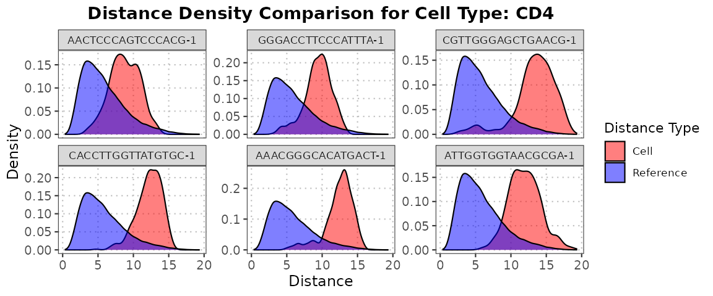
# Plot the densities of the distances for the anomalies
plot(distance_data, ref_cell_type = "CD8", cell_names = cd4_top6_anomalies)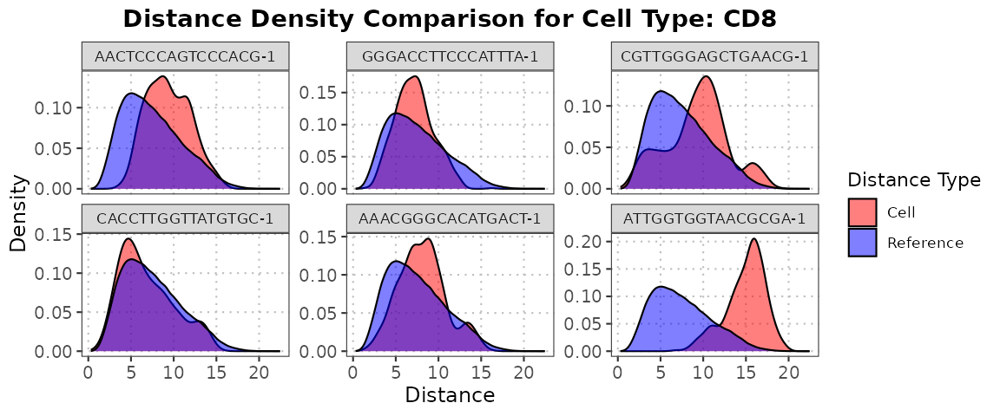
When using the detectAnomaly function to identify the top 6 anomalies in CD4+ T cells, a subsequent analysis reveals that these anomalous cells exhibit minimal overlap with the reference CD4+ T cell data. Instead, they show a significantly larger overlap with the reference data for CD8+ T cells. This pattern suggests that the anomalous CD4+ T cells may possess characteristics more akin to CD8+ T cells, possibly indicating a misclassification or a transitional cell state. This finding could have important biological implications, such as uncovering a subset of CD4+ T cells undergoing differentiation into CD8+ T cells, or identifying a distinct cell population that shares features of both T cell types. Such insights are critical for understanding cell identity and plasticity in immune responses, highlighting the utility of anomaly detection in single-cell RNA sequencing data analysis.
Compute Bhattacharyya Coefficients and Hellinger Distances on Cell Distances
This function calculates Bhattacharyya coefficients and Hellinger distances to quantify the similarity between density distributions of query cells and reference data.
# Get overlap measures
overlap_measures <- calculateCellDistancesSimilarity(query_data = query_data_subset,
reference_data = ref_data_subset,
cell_names = cd4_top6_anomalies,
query_cell_type_col = "labels",
ref_cell_type_col = "reclustered.broad")
overlap_measures$bhattacharyya_coef
#> Cell B_and_plasma CD8 CD4
#> 1 AACTCCCAGTCCCACG-1 0.2838214 0.8965671 0.7743430
#> 2 GGGACCTTCCCATTTA-1 0.3109462 0.9476774 0.7052183
#> 3 CGTTGGGAGCTGAACG-1 0.2584233 0.9447935 0.5397216
#> 4 CACCTTGGTTATGTGC-1 0.2541869 0.9914814 0.4618995
#> 5 AAACGGGCACATGACT-1 0.2875195 0.9706078 0.4892946
#> 6 ATTGGTGGTAACGCGA-1 0.4207154 0.4835584 0.5011162
overlap_measures$hellinger_dist
#> Cell B_and_plasma CD8 CD4
#> 1 AACTCCCAGTCCCACG-1 0.8462733 0.32160979 0.4750337
#> 2 GGGACCTTCCCATTTA-1 0.8300927 0.22874124 0.5429380
#> 3 CGTTGGGAGCTGAACG-1 0.8611485 0.23496073 0.6784382
#> 4 CACCTTGGTTATGTGC-1 0.8636047 0.09229603 0.7335533
#> 5 AAACGGGCACATGACT-1 0.8440856 0.17144142 0.7146366
#> 6 ATTGGTGGTAACGCGA-1 0.7611075 0.71863872 0.7063171When employing the calculateCellDistancesSimilarity function, the anomalous CD4+ T cells identified using detectAnomaly demonstrate intriguing patterns in their similarity measures. Specifically, these anomalous CD4+ T cells exhibit Bhattacharyya coefficients closest to 1 when compared to the reference CD8+ T cells. This high Bhattacharyya coefficient indicates a significant similarity between the distribution of these anomalous CD4+ T cells and the reference CD8+ T cell population.
Furthermore, the Hellinger distance for these anomalous CD4+ T cells, when measured against the CD8+ T cell reference data, is closest to 0. The low Hellinger distance reinforces the observation that these anomalous CD4+ T cells share a high degree of similarity with CD8+ T cells. Such findings suggest that these CD4+ T cells might be misclassified, potentially representing a transitional cell state or a subset with distinct characteristics that align more closely with CD8+ T cells. This nuanced analysis underscores the importance of combining anomaly detection with robust similarity measures to uncover hidden insights in single-cell RNA sequencing data.
Calculate Cell Similarity to PC Loadings
This function aims to compute the cosine similarity between cells based on the PCs obtained from PCA loadings. Anomalous cells, often identified through anomaly detection methods, may exhibit substantial effects on PCs with small eigenvalues. This function facilitates the examination of how anomalous cells align with principal components, potentially revealing aberrant expression patterns and aiding in the identification of outlier cells in scRNA-seq datasets.
# Store PCA anomaly data and plots
anomaly_output <- detectAnomaly(reference_data = ref_data_subset,
query_data = query_data_subset,
ref_cell_type_col = "reclustered.broad",
query_cell_type_col = "labels")
top6_anomalies <- names(sort(anomaly_output$Combined$reference_anomaly_scores, decreasing = TRUE)[1:6])
# Compute cosine similarity between anomalies and PCs
cosine_similarities <- calculateCellSimilarityPCA(se_object = ref_data_subset,
cell_names = top6_anomalies,
pc_subset = 1:25,
n_top_vars = 50)
# Plot similarities
plot(cosine_similarities, pc_subset = 15:25)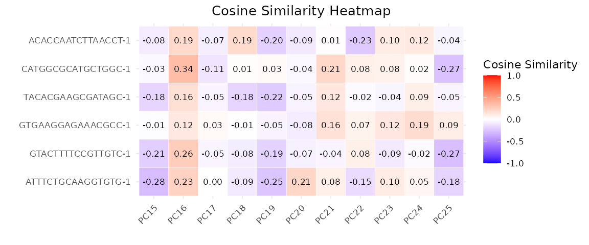
Project Query Data onto Discriminant Space of Reference Data
This function facilitates the projection of query single-cell RNA-seq data onto the discriminant space defined by reference data. By leveraging the discriminant space established using reference data, the function assesses the similarity between the query and reference data projections using cosine similarity and Mahalanobis distance.
The process involves several steps for each pairwise combination of cell types:
- Identification of top important variables to distinguish between the two cell types from the reference data.
- Computation of the Ledoit-Wolf shrinkage estimate of the covariance matrix for each cell type using the top important genes.
- Construction of within-class and between-class scatter matrices.
- Solution of the generalized eigenvalue problem to obtain discriminant vectors.
- Projection of both reference and query data onto the discriminant space.
- Assessment of the similarity of the query data projection to the reference data using cosine similarity and Mahalanobis distance.
disc_output <- calculateDiscriminantSpace(reference_data = ref_data_subset,
query_data = query_data_subset,
query_cell_type_col = "labels",
ref_cell_type_col = "reclustered.broad")
# Generate scatterplot
plot(disc_output, plot_type = "scatterplot")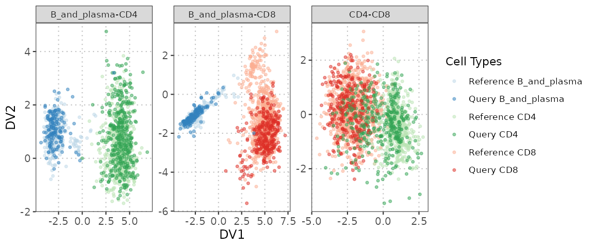
plot(disc_output, cell_types = "CD4-CD8", plot_type = "boxplot")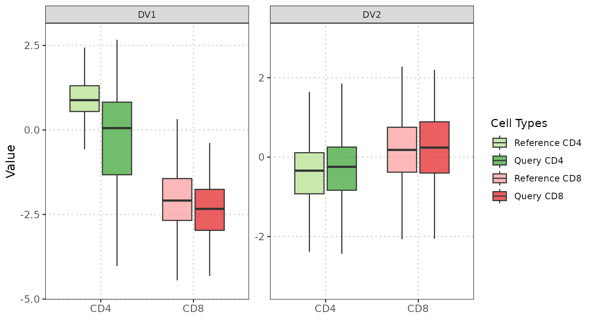
The scatterplot provides compelling evidence of an overlap between CD4+ and CD8+ cells, indicating a potential misannotation. Furthermore, the boxplot reveals a noticeable incongruity between the query and reference data in the discriminant space specifically for CD4+ T cells.
Compare PCA Results Across Datasets
The comparePCA function is designed to compare the
principal components (PCs) obtained from separate PCA analyses on
reference and query datasets for a specific cell type. It allows users
to assess the similarity between the PCs using either cosine similarity
or correlation metrics.
This function computes cosine similarities or correlations between the loadings of top variables for each pair of principal components from the reference and query datasets. It first extracts the PCA rotation matrices from both datasets and identifies the top variables with the highest loadings for each PC. Then, it computes the similarity values between the loadings of top variables for each pair of PCs. The resulting matrix contains similarity values, where rows represent reference PCs and columns represent query PCs.
# Selecting highly variable genes
ref_var <- getTopHVGs(ref_data, n = 500)
query_var <- getTopHVGs(query_data, n = 500)
# Intersect the gene symbols to obtain common genes
common_genes <- intersect(ref_var, query_var)
ref_data_subset <- ref_data[common_genes, ]
query_data_subset <- query_data[common_genes, ]
# Subset reference and query data for a specific cell type
ref_data_subset <- ref_data_subset[, which(ref_data_subset$reclustered.broad == "CD4")]
query_data_subset <- query_data_subset[, which(query_data_subset$reclustered.broad == "CD4")]
# Run PCA on the reference and query datasets separately
ref_data_subset <- runPCA(ref_data_subset, ncomponents = 50)
query_data_subset <- runPCA(query_data_subset, ncomponents = 50)
# Call the PCA comparison function
similarity_mat <- comparePCA(reference_data = ref_data_subset,
query_data = query_data_subset,
query_cell_type_col = "reclustered.broad",
ref_cell_type_col = "reclustered.broad",
pc_subset = 1:5,
n_top_vars = 50,
metric = c("cosine", "correlation")[1],
correlation_method = c("spearman", "pearson")[1])
# Create the heatmap
plot(similarity_mat)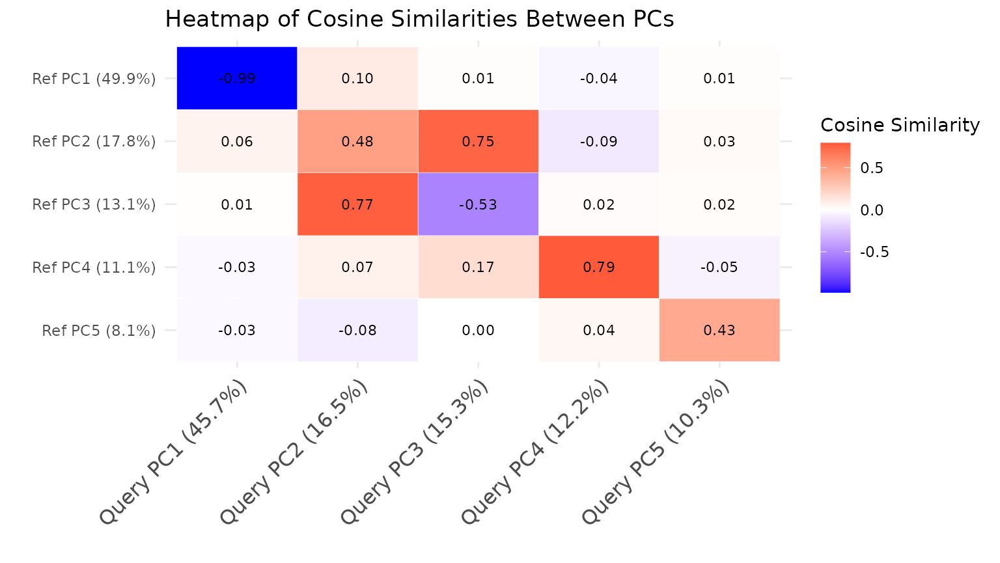
The comparePCA function provides insights into the consistency or discrepancy between the PCA results of reference and query datasets. By comparing the similarity matrix generated, users can discern patterns of similarity or dissimilarity in the principal components across datasets. This insight can help evaluate the quality of the reference dataset and the effectiveness of the PCA analysis in capturing similar structures in the query dataset.
Compare Subspaces Spanned by Top Principal Components
This function first computes the cosine similarity between the loadings of the top variables for each PC in both the reference and query datasets. It then selects the top cosine similarity scores and their corresponding PC indices. Additionally, the function calculates the average percentage of variance explained by the selected top PCs. Finally, it computes a weighted cosine similarity score based on the top cosine similarities and the average percentage of variance explained.
The comparePCASubspace function provides insights into the similarity between the subspaces spanned by the top PCs of the reference and query datasets. By comparing the weighted cosine similarity score, users can assess how closely aligned the subspaces are. This insight is valuable for understanding the consistency of the principal components between datasets and can aid in assessing the quality of data integration or comparative analysis.
subspace_comparison <- comparePCASubspace(query_data = query_data_subset,
reference_data = ref_data_subset,
query_cell_type_col = "reclustered.broad",
ref_cell_type_col = "reclustered.broad",
pc_subset = 1:5)
# Plot output for PCA subspace comparison
plot(subspace_comparison)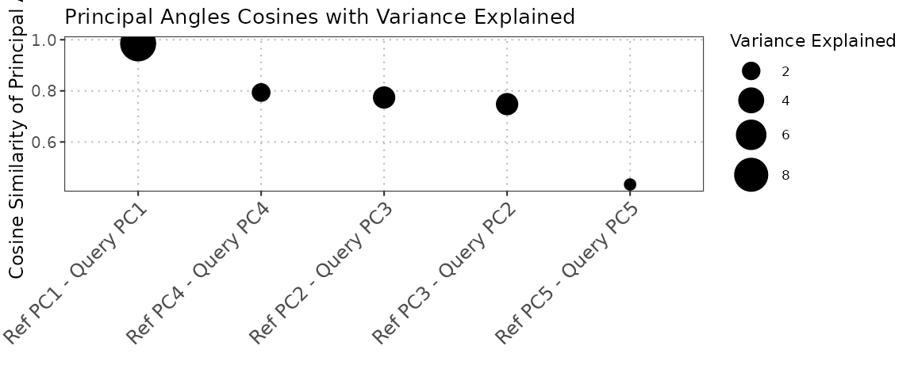
Compare Subspaces Spanned by Top Principal Components Using Canonical Correlation Analysis
The compareCCA function is a versatile tool designed to compare the subspaces defined by the top principal components (PCs) in two distinct datasets using Canonical Correlation Analysis (CCA). Its primary functionality lies in assessing the similarity between the structures represented by these PCs, providing researchers with a quantitative measure of the concordance between high-dimensional datasets. By focusing on the top loading variables for each PC, the function allows for a targeted examination of the most informative features driving the observed variation, enhancing the interpretability of the comparative analysis.
cca_comparison <- compareCCA(query_data = query_data_subset,
reference_data = ref_data_subset,
query_cell_type_col = "reclustered.broad",
ref_cell_type_col = "reclustered.broad",
pc_subset = 1:5)
# Create a data frame for plotting
plot(cca_comparison)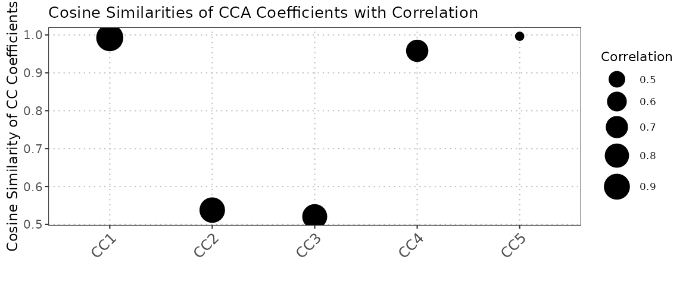
Conclusion
In this analysis, we have demonstrated the capabilities of the scDiagnostics package for assessing the appropriateness of cell assignments in single-cell gene expression profiles. By utilizing various diagnostic functions and visualization techniques, we have explored different aspects of the data, including total UMI counts, annotation scores, gene expression distributions, dimensional reduction plots, gene set scores, pairwise correlations, pairwise distances, and linear regression analysis.
Through the scatter plots, histograms, and dimensional reduction plots, we were able to gain insights into the relationships between gene expression patterns, cell types, and the distribution of cells in a reduced-dimensional space. The examination of gene expression distributions, gene sets, and pathways allowed us to explore the functional landscape and identify subpopulations with distinct characteristics within the dataset. Additionally, the pairwise correlation and distance analyses provided a deeper understanding of the similarities and differences between cell types, highlighting potential relationships and patterns.
R.session Info
R version 4.4.1 (2024-06-14)
Platform: x86_64-pc-linux-gnu
Running under: Ubuntu 22.04.4 LTS
Matrix products: default
BLAS: /usr/lib/x86_64-linux-gnu/openblas-pthread/libblas.so.3
LAPACK: /usr/lib/x86_64-linux-gnu/openblas-pthread/libopenblasp-r0.3.20.so; LAPACK version 3.10.0
locale:
[1] LC_CTYPE=C.UTF-8 LC_NUMERIC=C LC_TIME=C.UTF-8
[4] LC_COLLATE=C.UTF-8 LC_MONETARY=C.UTF-8 LC_MESSAGES=C.UTF-8
[7] LC_PAPER=C.UTF-8 LC_NAME=C LC_ADDRESS=C
[10] LC_TELEPHONE=C LC_MEASUREMENT=C.UTF-8 LC_IDENTIFICATION=C
time zone: UTC
tzcode source: system (glibc)
attached base packages:
[1] stats4 stats graphics grDevices utils datasets methods
[8] base
other attached packages:
[1] celldex_1.14.0 AUCell_1.26.0
[3] SingleR_2.6.0 scran_1.32.0
[5] scater_1.32.0 ggplot2_3.5.1
[7] scuttle_1.14.0 scRNAseq_2.18.0
[9] SingleCellExperiment_1.26.0 SummarizedExperiment_1.34.0
[11] Biobase_2.64.0 GenomicRanges_1.56.1
[13] GenomeInfoDb_1.40.1 IRanges_2.38.1
[15] S4Vectors_0.42.1 BiocGenerics_0.50.0
[17] MatrixGenerics_1.16.0 matrixStats_1.3.0
[19] scDiagnostics_0.99.6 BiocStyle_2.32.1
loaded via a namespace (and not attached):
[1] BiocIO_1.14.0 bitops_1.0-7
[3] filelock_1.0.3 tibble_3.2.1
[5] R.oo_1.26.0 graph_1.82.0
[7] XML_3.99-0.17 lifecycle_1.0.4
[9] httr2_1.0.2 edgeR_4.2.1
[11] isotree_0.6.1-1 MASS_7.3-60.2
[13] lattice_0.22-6 ensembldb_2.28.0
[15] alabaster.base_1.4.2 magrittr_2.0.3
[17] speedglm_0.3-5 limma_3.60.4
[19] sass_0.4.9 rmarkdown_2.27
[21] jquerylib_0.1.4 yaml_2.3.9
[23] metapod_1.12.0 DBI_1.2.3
[25] abind_1.4-5 zlibbioc_1.50.0
[27] R.utils_2.12.3 AnnotationFilter_1.28.0
[29] RCurl_1.98-1.16 rappdirs_0.3.3
[31] GenomeInfoDbData_1.2.12 ggrepel_0.9.5
[33] irlba_2.3.5.1 alabaster.sce_1.4.0
[35] annotate_1.82.0 dqrng_0.4.1
[37] pkgdown_2.1.0 DelayedMatrixStats_1.26.0
[39] codetools_0.2-20 DelayedArray_0.30.1
[41] tidyselect_1.2.1 farver_2.1.2
[43] UCSC.utils_1.0.0 ScaledMatrix_1.12.0
[45] viridis_0.6.5 BiocFileCache_2.12.0
[47] GenomicAlignments_1.40.0 jsonlite_1.8.8
[49] BiocNeighbors_1.22.0 systemfonts_1.1.0
[51] tools_4.4.1 ragg_1.3.2
[53] Rcpp_1.0.13 glue_1.7.0
[55] gridExtra_2.3 SparseArray_1.4.8
[57] ranger_0.16.0 xfun_0.46
[59] dplyr_1.1.4 HDF5Array_1.32.0
[61] gypsum_1.0.1 withr_3.0.0
[63] BiocManager_1.30.23 fastmap_1.2.0
[65] rhdf5filters_1.16.0 bluster_1.14.0
[67] fansi_1.0.6 digest_0.6.36
[69] rsvd_1.0.5 R6_2.5.1
[71] textshaping_0.4.0 colorspace_2.1-0
[73] RSQLite_2.3.7 R.methodsS3_1.8.2
[75] utf8_1.2.4 generics_0.1.3
[77] data.table_1.15.4 rtracklayer_1.64.0
[79] httr_1.4.7 htmlwidgets_1.6.4
[81] S4Arrays_1.4.1 pkgconfig_2.0.3
[83] gtable_0.3.5 blob_1.2.4
[85] XVector_0.44.0 htmltools_0.5.8.1
[87] bookdown_0.40 GSEABase_1.66.0
[89] ProtGenerics_1.36.0 scales_1.3.0
[91] alabaster.matrix_1.4.2 png_0.1-8
[93] knitr_1.48 rjson_0.2.21
[95] curl_5.2.1 cachem_1.1.0
[97] rhdf5_2.48.0 BiocVersion_3.19.1
[99] parallel_4.4.1 vipor_0.4.7
[101] AnnotationDbi_1.66.0 restfulr_0.0.15
[103] desc_1.4.3 pillar_1.9.0
[105] grid_4.4.1 alabaster.schemas_1.4.0
[107] vctrs_0.6.5 BiocSingular_1.20.0
[109] dbplyr_2.5.0 beachmat_2.20.0
[111] xtable_1.8-4 cluster_2.1.6
[113] beeswarm_0.4.0 evaluate_0.24.0
[115] GenomicFeatures_1.56.0 cli_3.6.3
[117] locfit_1.5-9.10 compiler_4.4.1
[119] Rsamtools_2.20.0 rlang_1.1.4
[121] crayon_1.5.3 labeling_0.4.3
[123] fs_1.6.4 ggbeeswarm_0.7.2
[125] alabaster.se_1.4.1 viridisLite_0.4.2
[127] BiocParallel_1.38.0 munsell_0.5.1
[129] Biostrings_2.72.1 lazyeval_0.2.2
[131] Matrix_1.7-0 ExperimentHub_2.12.0
[133] sparseMatrixStats_1.16.0 bit64_4.0.5
[135] Rhdf5lib_1.26.0 KEGGREST_1.44.1
[137] statmod_1.5.0 highr_0.11
[139] alabaster.ranges_1.4.2 AnnotationHub_3.12.0
[141] igraph_2.0.3 memoise_2.0.1
[143] bslib_0.7.0 biglm_0.9-3
[145] bit_4.0.5